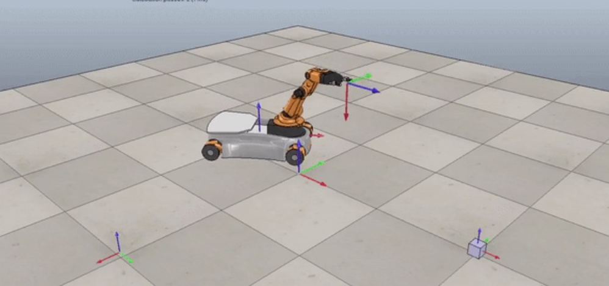
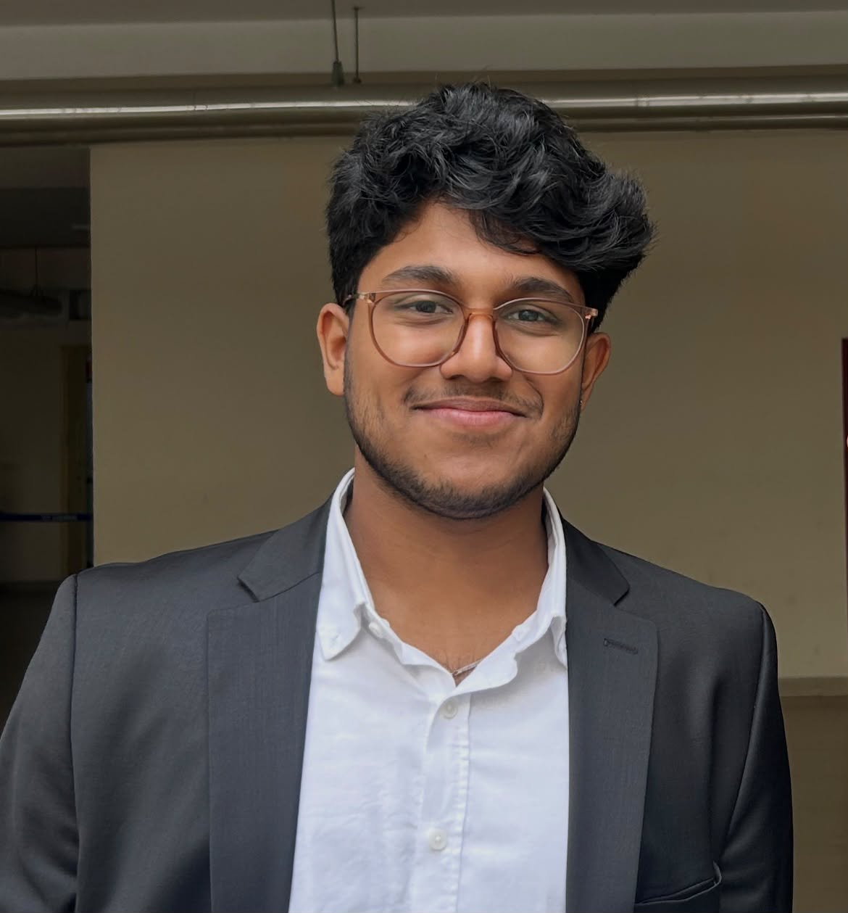
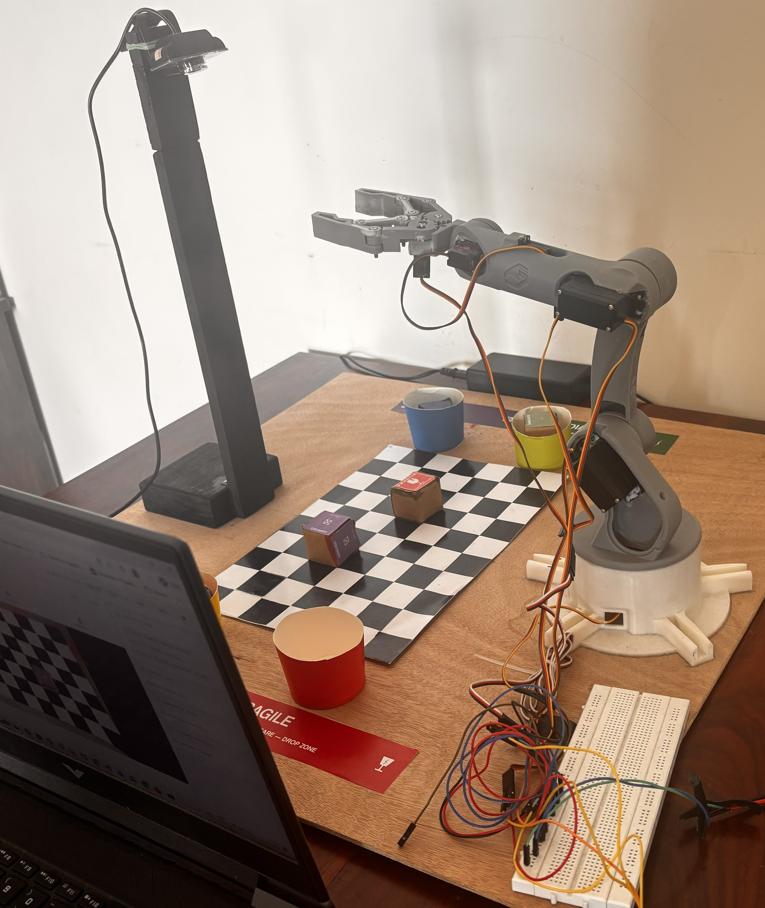
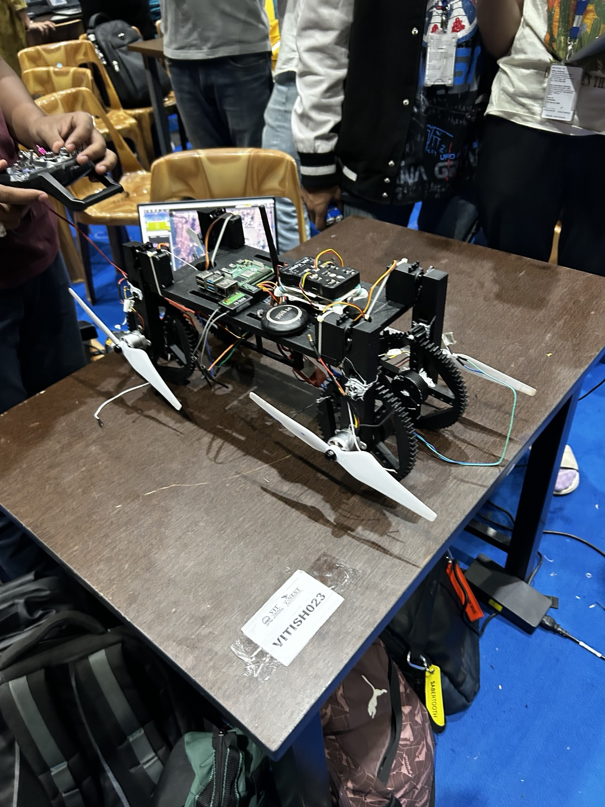
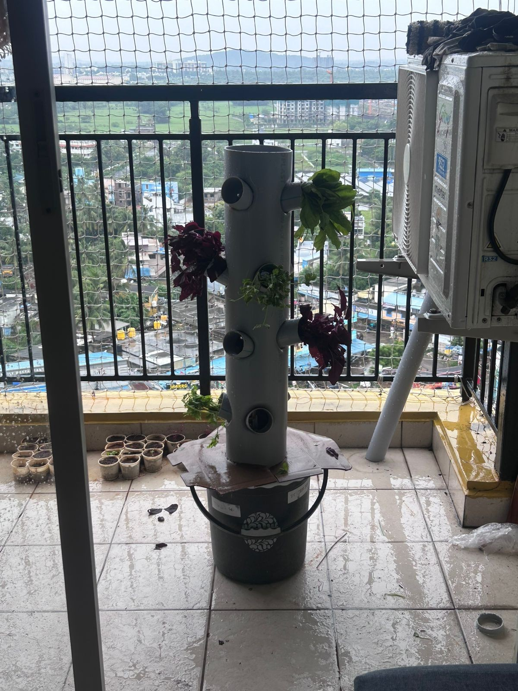
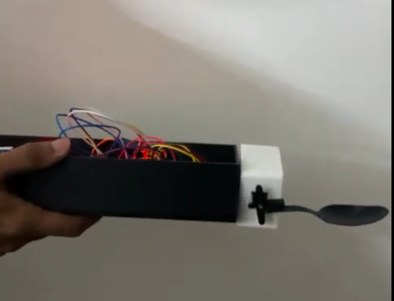
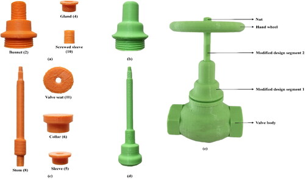
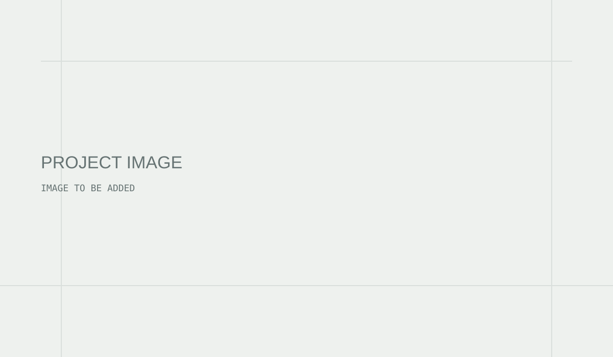
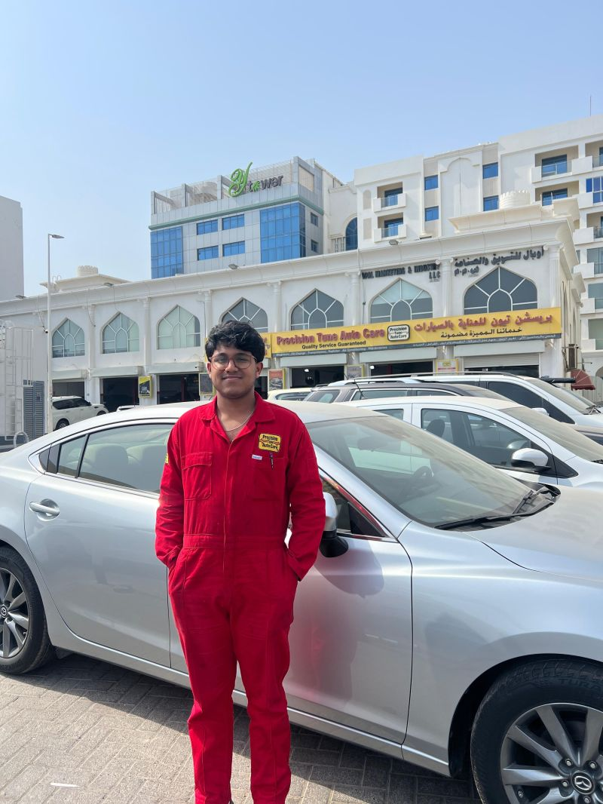
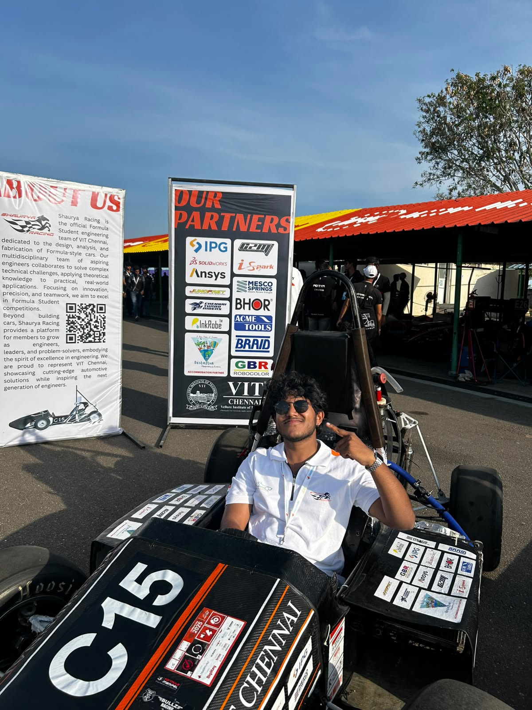

01 · IN PROGRESS · 2025
Autonomous Assistive Robotic Arm
Mobile rover and robotic arm for inspection, fault detection, screw tightening, and material handling.
VIEW PROJECT →I build across mechanical design, automation, machine vision, electronics, and system integration, with a strong interest in automotive and applied robotics.

I am a Mechatronics and Automation Engineer from VIT Chennai, with a hands-on interest in turning engineering concepts into physical, working systems. My work sits at the intersection of mechanical design, automation, computer vision, robotics, electronics, and system integration.
Throughout my engineering projects and industry experience, I have worked across the full path from designing and modelling a system to building, testing, troubleshooting, and improving it. I enjoy problems where mechanical components, sensors, software, and control have to work together rather than in isolation.
My project experience includes autonomous robotics, vision-guided package sorting, VTOL systems, assistive mechatronics, IoT-based automation, and engineering research. I have also gained practical exposure to automotive diagnostics and servicing, as well as technical project execution in the oil and gas technology space.
I am particularly interested in automotive systems, intelligent automation, robotics, machine vision, industrial inspection, and engineering product development. I am curious by nature, comfortable learning new technologies, and interested in understanding how a system works all the way from its physical components to its control and operation.
SolidWorks · Fusion 360 · Blender · CAD · CAM · CNC · 3D Printing
Python · MATLAB · OpenCV · YOLO · Java · R Studio
ROS 2 · MoveIt · Gazebo · CoppeliaSim · Siemens PLC · TIA Portal · SCADA
Arduino · ESP32 · IMU-based systems · sensors · servo actuation
Autel diagnostics · OBD · servicing · maintenance · automotive systems
Systems thinking
I look at how mechanical, electrical, software, and control elements interact as one system.
Hands-on problem solving
I enjoy moving from CAD and concepts to prototypes, testing, troubleshooting, and iteration.
Adaptability
My experience spans robotics, automotive, automation, computer vision, research, and industrial technology.
Curiosity
I am motivated by learning new tools and understanding the engineering behind how things work.
Languages
English · Malayalam · Tamil · Hindi · French (beginner)
Each project opens a case file with the overview, your contribution, technologies, and related images.

Mobile rover and robotic arm for inspection, fault detection, screw tightening, and material handling.
VIEW PROJECT →
Vision-guided autonomous sorting and inspection using an RGB camera and object detection.
VIEW PROJECT →
Modular VTOL platform designed to transform between aerial and ground operation.
VIEW PROJECT →
Low-cost automated aeroponics with environmental sensing, control, and monitoring.
VIEW PROJECT →
Assistive device developed to compensate for hand tremors and stabilize spoon motion.
VIEW PROJECT →
Assembly redesign using K-Means clustering and material-similarity adjacency.
VIEW PROJECT →Click an experience to see the context, responsibilities, and related images.

Technology projects for the Gulf oil and gas sector, including requirements, vision systems, industrial sensing, dashboards, documentation, and execution.
VIEW EXPERIENCE →
Diagnostics, servicing, maintenance, and repair work involving engines, transmissions, brakes, and electrical systems.
VIEW EXPERIENCE →
Chassis design and system integration for Formula Bharat, alongside business and cost/manufacturing activities.
VIEW EXPERIENCE →Published research · 2025 · Cogent Engineering
OPEN PAPER →Components in the improved valve assembly, a 64.3% reduction reported in the study.